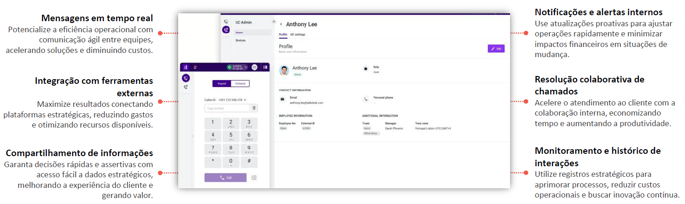

O Collaboration otimiza a comunicação interna, promovendo colaboração ágil e eficiente. Oferece chat em tempo real, transferências rápidas e acesso a especialistas, acelerando soluções com menos interrupções ao cliente.
Permite a troca de mensagens entre agentes e equipes dentro da própria plataforma do Talkdesk.
Conecta-se a plataformas como Microsoft Teams, Slack e Zoom, permitindo colaboração sem sair do ambiente de trabalho.
Facilita o envio de detalhes sobre interações de clientes, garantindo que agentes tenham contexto completo para solucionar casos.
Supervisores podem enviar notificações para agentes sobre mudanças operacionais, escalonamentos e treinamentos.
Os agentes podem solicitar suporte de especialistas internos sem transferir a chamada do cliente, reduzindo o tempo de resolução.
Registra todas as comunicações internas, garantindo rastreabilidade e conformidade com políticas organizacionais.
Se destaca por ser totalmente integrado ao contact center, permitindo comunicação rápida entre agentes e supervisores sem precisar de ferramentas externas.
Enquanto outras soluções fragmentam a troca de informações, ele centraliza tudo na interface do Talkdesk, agilizando a resolução de chamadas e tickets.
Com grupos de discussão, menções e notificações inteligentes, evita ruídos na operação.
Sua integração nativa com o CX Cloud garante mais agilidade, produtividade e eficiência no atendimento.